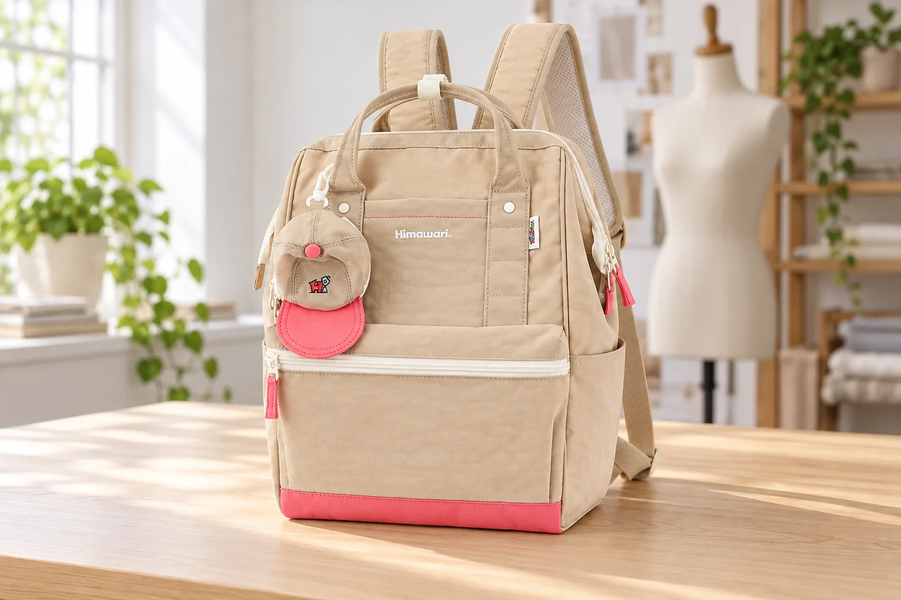
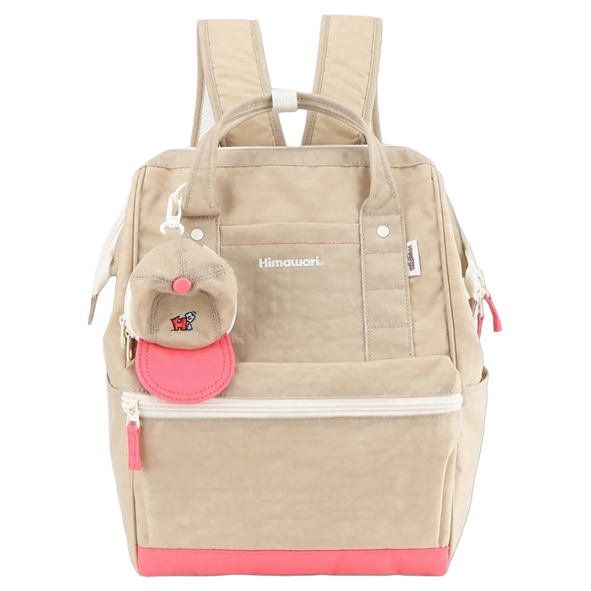
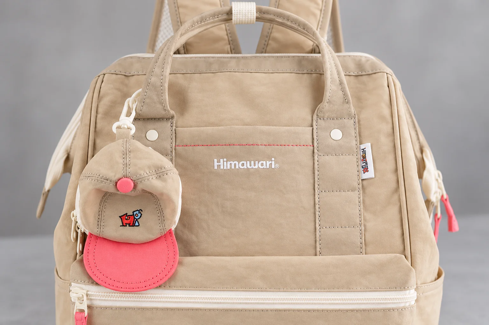

백팩 봉제선 사진, 실 끊김과 원단 주름을 어떻게 구분할까

백팩을 주문하기 전에 상품 사진을 확대하다가 봉제선의 일부가 끊긴 것처럼 보일 때가 있습니다. 받아 본 가방을 찍었는데 가장자리가 유난히 울어 보이기도 합니다. 이런 사진 한 장만으로 실이 풀렸다거나 마감에 문제가 없다고 판정하기는 어렵습니다. 실 자체의 상태, 원단이 놓인 모양, 빛 때문에 생긴 그림자가 비슷하게 보일 수 있기 때문입니다.
이 글에서는 No.9007 베이지의 실제 제품 사진을 기준으로 봉제선의 위치를 살펴봅니다. 위쪽 손잡이에서 내려오는 부위, 로고 위의 분홍색 가로선, 앞 포켓 둘레처럼 비교할 자리가 분명한 가방입니다. 제조사 카탈로그의 외부 크기는 가로 28 × 세로 40 × 폭 17cm이며 겉감과 안감은 폴리에스터로 안내되어 있습니다. 사진을 통해 이 제품의 봉제 강도나 내부 보강을 평가하려는 것은 아닙니다. 어떤 모습이 궁금한지 정확하게 설명하는 방법에 초점을 둡니다.
첫 번째: 가는 실이 중간에서 사라져 보인다
베이지 바탕에 비슷한 색의 실이 놓인 부분은 분홍색 가로선보다 사진에서 찾기 어려울 수 있습니다. 작은 화면에서는 실과 바탕이 한 색처럼 합쳐지고, 확대하면 원래 사진에 없는 세부까지 흐릿하게 늘어납니다. 화면을 크게 했다는 사실만으로 관찰할 정보가 늘어난 것은 아닙니다. 원본 사진에서 선이 충분히 또렷한지부터 보아야 합니다.
특정 지점이 비어 보인다면 그 부분만 잘라 저장하기 전에 손잡이나 포켓이 함께 보이는 전체 사진을 남깁니다. 이어서 같은 부위를 조금 더 가까이 찍거나 선명한 상세 사진을 요청합니다. 전체 사진은 위치를 알려주고, 가까운 사진은 그 위치의 상태를 보여줍니다. 두 사진의 역할이 다르므로 어느 하나만으로 대신하려고 하지 않는 편이 좋습니다.
실물을 촬영할 때에는 디지털 확대를 끝까지 올리기보다 카메라가 초점을 맞출 수 있는 거리에서 찍습니다. 초점이 가방 뒤의 배경에 맞으면 봉제선은 모두 흐려집니다. 휴대전화 화면에서 관심 부위를 눌러 초점을 확인한 뒤, 사진을 열어 그 선이 실제로 분리되어 보이는지 확인합니다. 너무 가까워 초점이 맞지 않으면 조금 물러나는 편이 낫습니다.
선명한 사진에서도 실의 연결이 보이지 않거나 실물이 궁금한 상태라면 그 사실을 그대로 문의합니다. “이 부분의 실이 사진에서 이어져 보이지 않습니다”라고 위치를 설명하면 됩니다. 사진만으로 원인을 제조 과정이나 특정 사용 습관으로 확정할 필요는 없습니다. 판매처가 추가로 확인해야 할 부위를 찾을 수 있는 자료를 만드는 것이 목적입니다.

두 번째: 포켓 가장자리가 물결처럼 보인다
가방 앞 포켓의 경계에는 실뿐 아니라 접힌 원단과 그림자도 함께 있습니다. 가방을 비운 상태로 눕혀 놓았는지, 물건을 넣고 세워 놓았는지에 따라 그 면이 다른 모양으로 놓일 수 있습니다. 먼저 사진을 찍을 때의 가방 상태를 확인합니다. 비어 있는 제품 사진과 꽉 채운 자신의 가방 사진을 나란히 두고 경계만 비교하면 서로 다른 조건을 마감 차이로 읽을 수 있습니다.
자신의 가방을 확인한다면 내용물을 비우고 안정된 곳에 놓은 상태의 사진을 추가할 수 있습니다. 원단을 세게 잡아 펴거나 다림질해 모양을 바꾸지는 않습니다. 놓인 자세를 바꿨을 때도 같은 지점이 접혀 있는지 살펴보는 정도면 문의 자료를 만드는 데 충분합니다. 짐을 뺀 전후 사진에는 어느 쪽이 빈 상태인지 표시해 두면 혼동이 적습니다.
옆에서 들어오는 강한 빛은 작은 굴곡에도 그림자를 만듭니다. 같은 위치를 부드러운 빛에서 정면으로 한 번 더 보면 어두운 선이 원단의 경계인지 파인 틈인지 구별할 자료가 생깁니다. 밝기를 높여 그림자를 모두 지우는 보정은 상태를 전달하는 데 도움이 되지 않을 수 있습니다. 원본 사진을 보관하고 위치 표시가 필요하면 복사본에 따로 남기는 편이 낫습니다.
자세나 빛을 바꿨을 때 모양이 달라졌다고 곧바로 정상이라고 결론 내리는 것도 조심해야 합니다. 직접 관찰한 것은 조건에 따라 사진의 인상이 달라졌다는 사실입니다. 여밈을 사용할 때 불편한 부분이 있는지, 실제 원단이나 실이 어떤 상태인지는 별도로 설명할 수 있습니다. 외관 사진과 사용 중 느낀 문제를 나누어 적으면 상담에서 확인할 범위가 분명해집니다.

세 번째: 연결부에 실 끝이 나와 있다
손잡이 아래나 포켓 모서리에서 짧은 실이 보이면 바로 잘라 정리하고 싶어질 수 있습니다. 하지만 어디에서 나온 실인지 모르는 상태라면 먼저 사진을 남겨두는 편이 좋습니다. 늘어진 실을 잡아당겨 얼마나 나오는지 시험하면 처음 상태가 달라집니다. 문의할 계획이라면 가방 전체에서의 위치와 실 끝이 보이는 가까운 모습을 함께 보관합니다.
No.9007의 정면에서는 손잡이 아래로 길게 내려오는 두 부위와 둥근 부품이 보입니다. 이런 위치를 설명할 때에는 “위쪽”이라고만 하기보다 “정면에서 보아 오른쪽 손잡이 아래”처럼 기준을 붙일 수 있습니다. 가방을 멨을 때의 오른쪽과 사진에서의 오른쪽이 다를 수 있어서입니다. 가까운 사진에도 둥근 부품이나 로고 같은 기준점이 일부 들어가면 위치를 맞추기 쉽습니다.
손잡이 연결부에 관한 질문이라도 무거운 짐을 넣고 당겨 보는 시험은 필요하지 않습니다. 사용을 이어가도 되는지 판단이 어렵다면 확인받을 때까지 무게를 더하지 않고 상태를 문의할 수 있습니다. 겉에서 보이는 봉제 줄의 수와 부품 개수만으로 하중을 계산할 수는 없습니다. 내부 보강이나 허용 사용 조건은 제품 안내와 판매처의 확인이 필요한 정보입니다.
문의 사진을 보내기 전에 남길 세 문장
긴 설명 대신 모델과 위치, 관찰한 상태를 나누어 적어봅니다. 예를 들면 “No.9007 베이지입니다. 정면 오른쪽 손잡이 아래의 실 끝이 보입니다. 아직 자르거나 당기지 않았고, 전체 사진과 가까운 사진을 함께 보냅니다”처럼 쓸 수 있습니다. 여밈이 걸리는 등 실제로 겪은 일이 있다면 언제 어느 부분에서 그랬는지를 덧붙입니다. 없는 경험을 사진의 인상만으로 만들어 적지 않습니다.
이미 세척하거나 실을 정리했다면 그 과정도 함께 알리는 편이 좋습니다. 처리 전후가 구분되어야 현재 사진이 무엇을 보여주는지 알 수 있기 때문입니다. 교환이나 수선 가능 여부는 구매처와 제품의 확인을 거쳐 안내받을 내용이며, 이 글의 관찰 방법 자체가 판정 기준은 아닙니다. 자료를 정확하게 남기는 일과 처리 결정을 받는 일을 구분해 두면 됩니다.
본문의 AI 연출 사진 두 장은 봉제선이 놓인 자리를 설명하기 위한 장면입니다. 실제 생산품의 실 간격이나 마감 상태를 증명하는 확대 사진이 아닙니다. 품질을 판단할 때에는 함께 실은 실제 제품 사진과 자신이 받은 가방의 원본 사진을 기준으로 삼아야 합니다. 한 줄이 이상하게 보였던 순간에서 바로 결론으로 건너뛰지 않고, 같은 위치를 확인할 수 있는 사진 한 장을 더 남겨보세요.